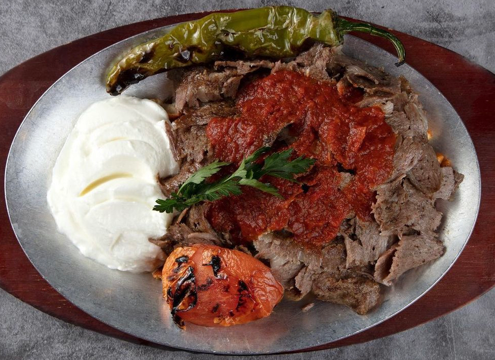

A specialty of the city of Bursa, İskender kebap is named after a butcher called İskender Efendi, who first prepared this flavorful dish. It consists of thinly sliced lamb that is grilled and combined with a spicy tomato sauce and pita bread, while melted sheep butter and yogurt are traditionally drizzled over the dish at the table. It is recommended to pair this kebap with şıra, a Turkish beverage that is known to aid digestion.
Meal prep time : 40 minutes
Servings : 4-6